Hello & Welcome
to my website. Please, enjoy your stay.
This website is dedicated to my favorite internet things, bips and bops. I have collected some cool and useful websites, most of them design tools. If you scroll a bit more, you will find some pictures and videos I have saved over the years.
websites
very interactive visual sites
some examples of cool websites or web applications by Giovanni Abbatepaolo
my visuals
first of all, that's me
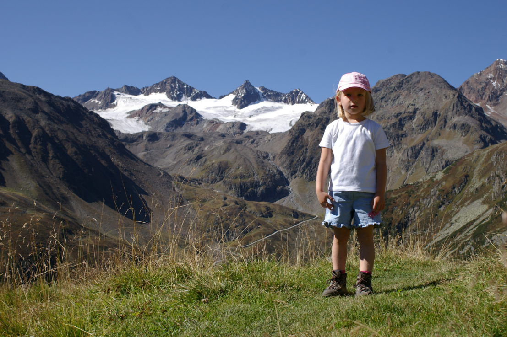
not really a video but heres my first animation in a long time!

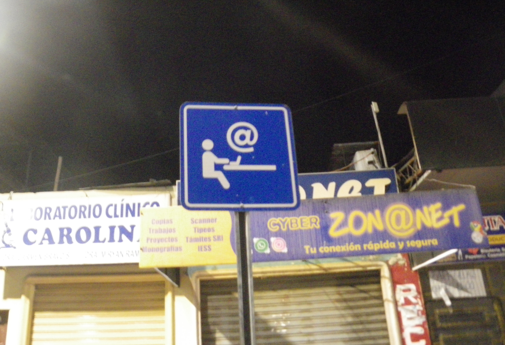
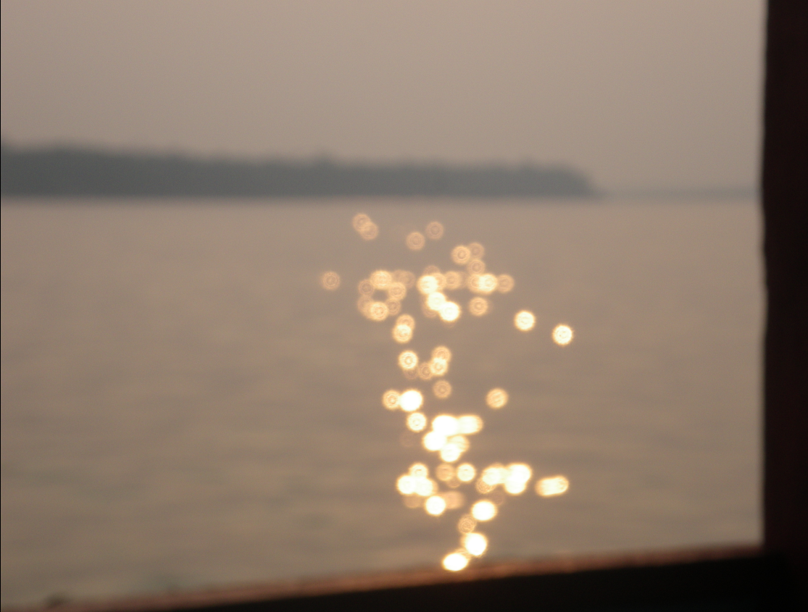
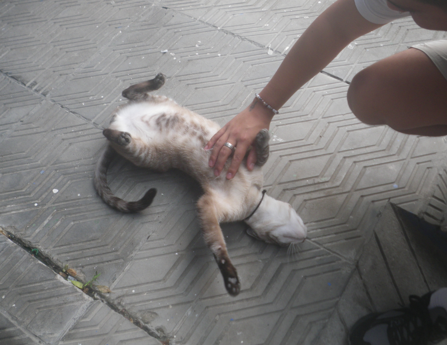
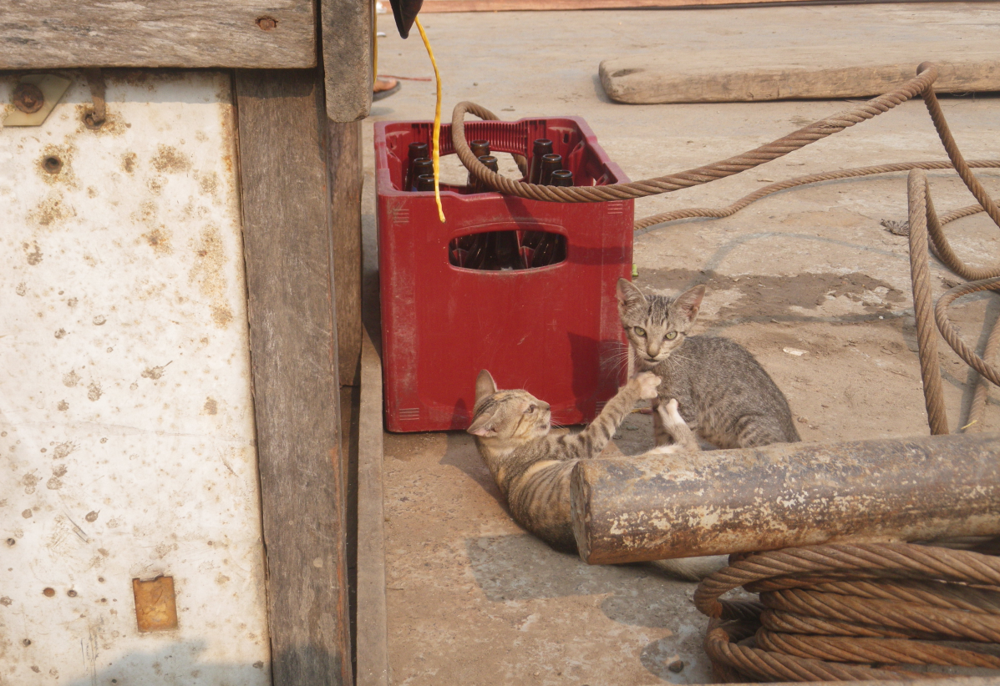
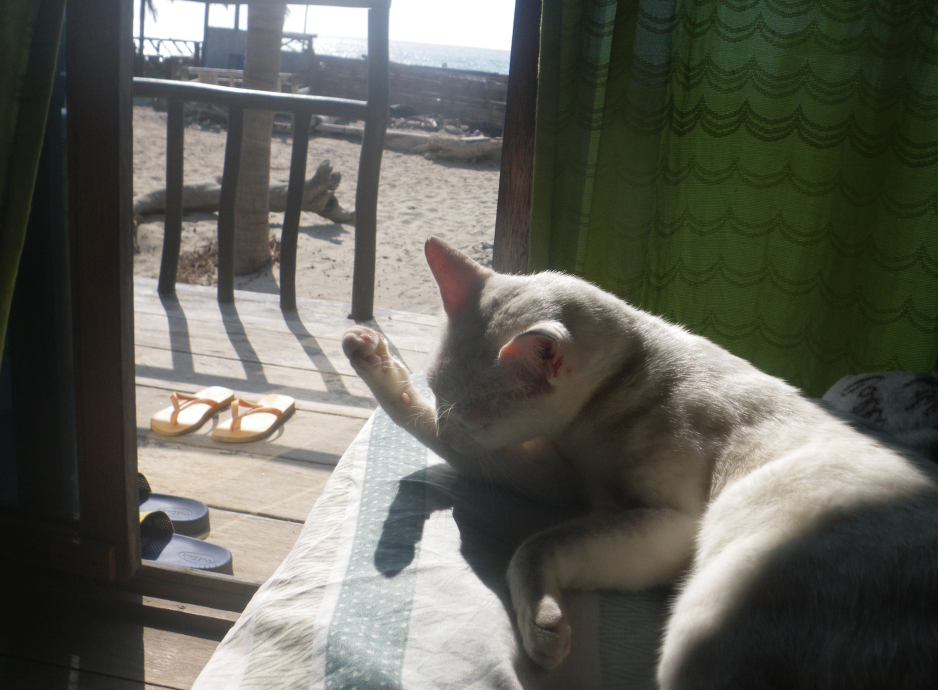
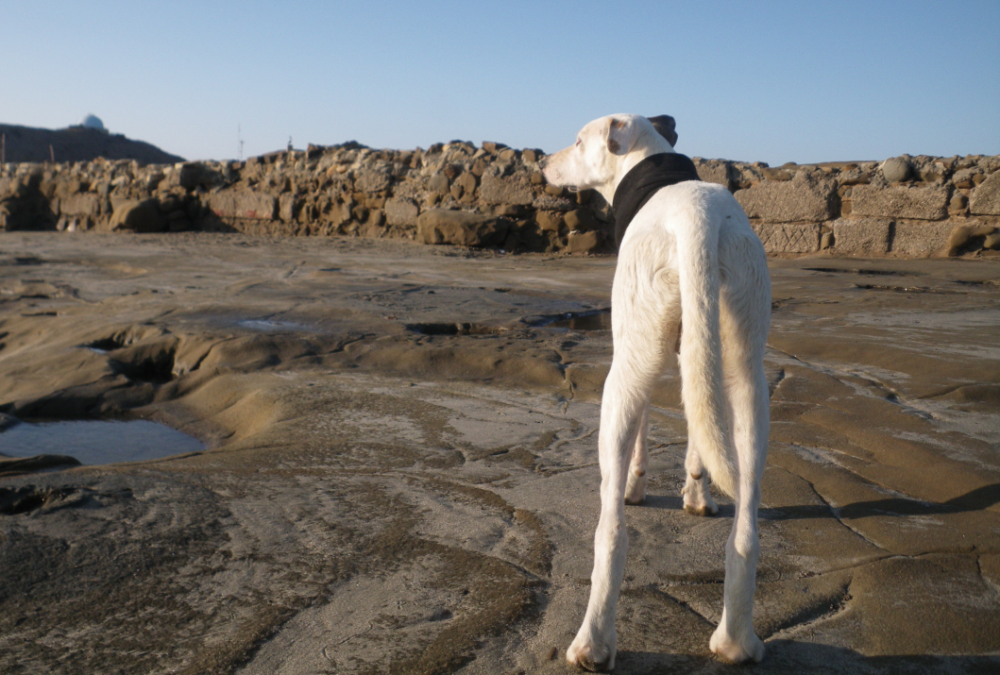
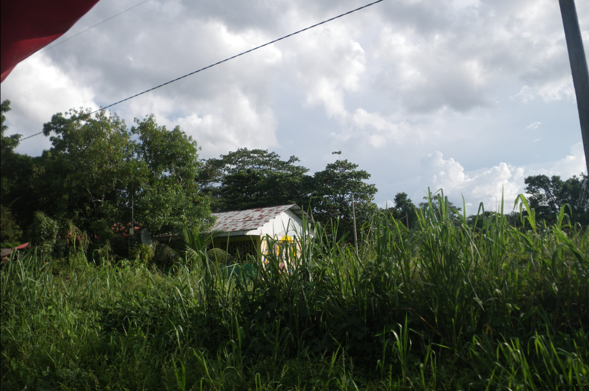
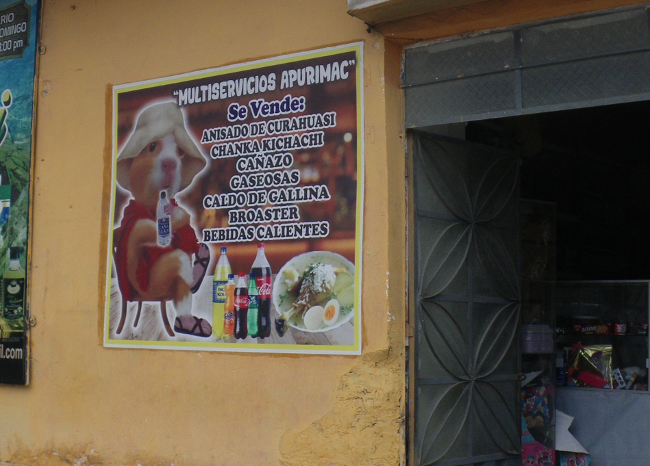
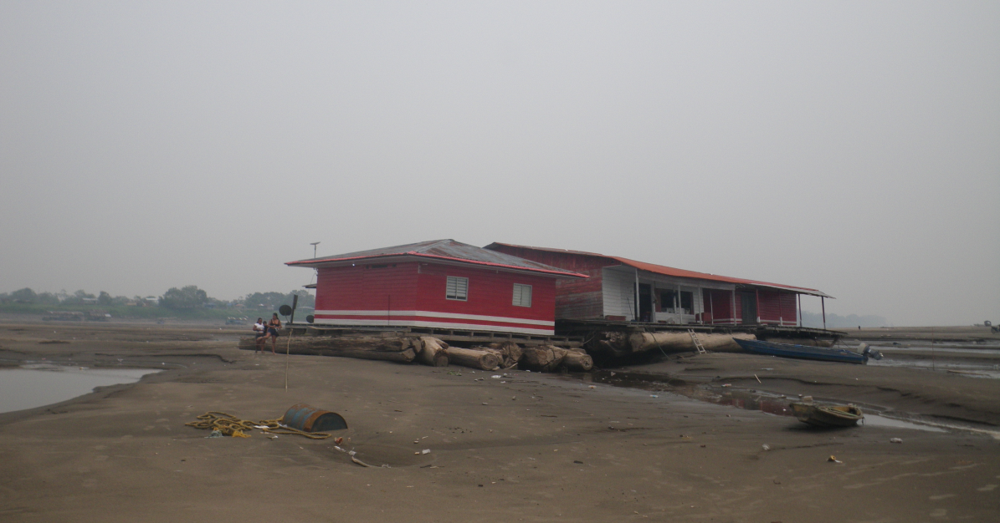
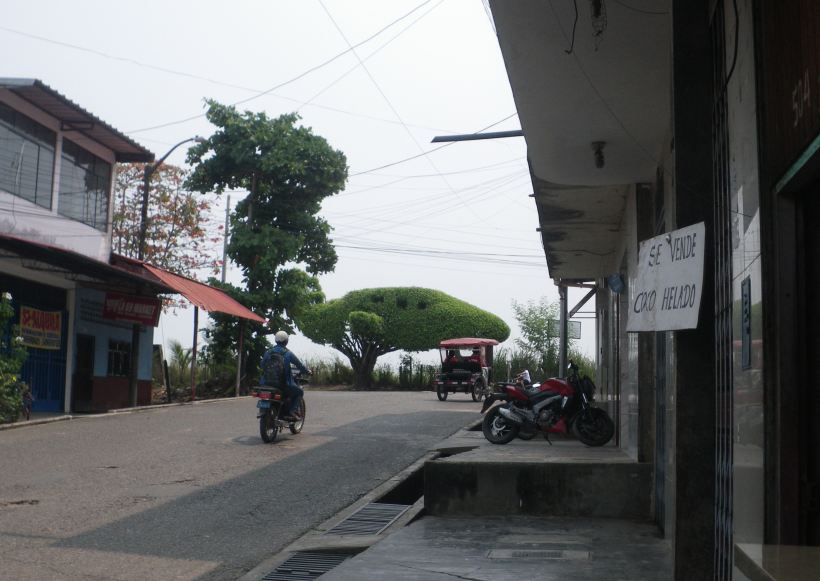